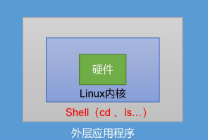

Shell编程-Shell概述

文章目录
shell 是操作系统的最外层。shell 合并编程语言以控制进程和文件，以及启动和控制其它程序。shell 通过提示您输入，向操作系统解释该输入，然后处理来自操作系统的任何结果输出来管理您与操作系统之间的交互。
什么是Shell
Shell 是一个用 C 语言编写的程序，它是用户使用 Linux 的桥梁。
Shell 既是一种命令语言，又是一种程序设计语言。
Shell 是指一种应用程序，这个应用程序提供了一个界面，用户通过这个界面访问操作系统内核的服务。
Shell是一个命令行解释器，它接收应用程序/用户命令，然后调用操作系统内核

Shell还是一个功能相当强大的编程语言，易编写、易调试、灵活性强。
什么是Shell脚本
Shell 脚本（shell script），是一种为 shell 编写的脚本程序，一般文件后缀为 .sh。
业界所说的 shell 通常都是指 shell 脚本，但 shell 和 shell script 是两个不同的概念。
shell环境
Shell 编程跟 java、php 编程一样，只要有一个能编写代码的文本编辑器和一个能解释执行的脚本解释器就可以了。
Linux 提供的Shell 解析器有
|
|
文章作者 Pure3417
上次更新 2023-06-01